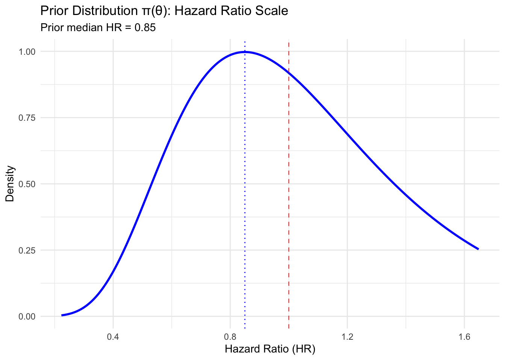
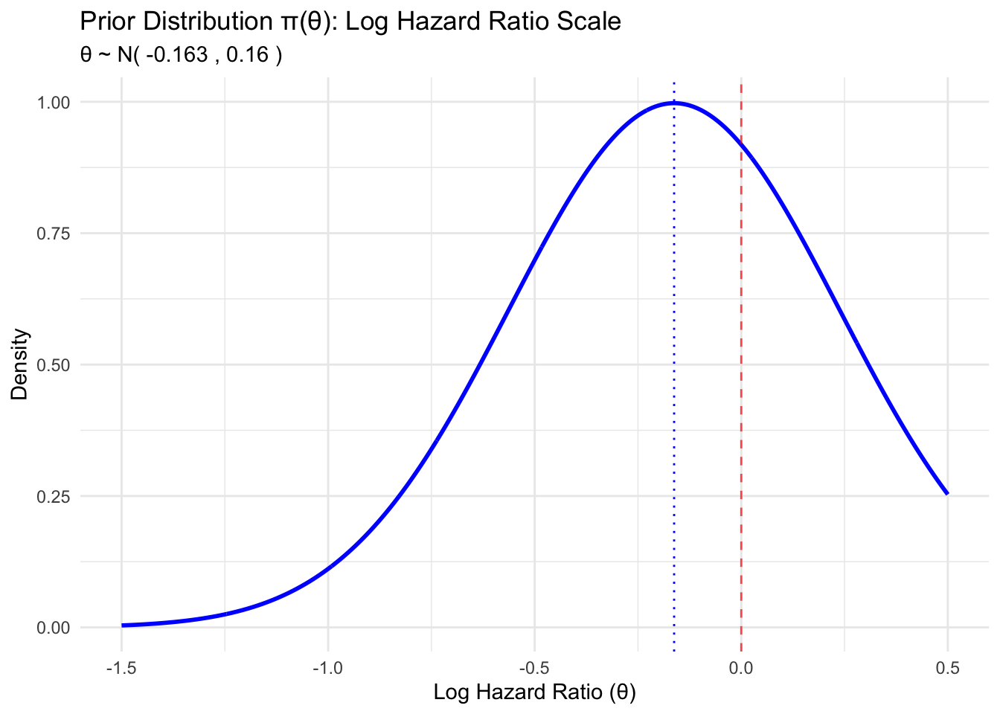

Bayesian Adaptive Design: Conditional Power and A Case Study
Author
Dadong Zhang
Published
August 26, 2025
Introduction
Adaptive trial designs allow for planned modifications to ongoing trials based on accumulating data while maintaining trial integrity and statistical validity. Conditional power is a key statistical tool that evaluates the probability of trial success given interim data, enabling informed decisions about early stopping or sample size re-estimation.
This tutorial demonstrates the theoretical foundation and practical implementation of Bayesian conditional power through the VALOR trial case study, specifically focusing on sample size re-estimation when interim data suggest the original design may be underpowered.
2. Methodology
2.1 Conditional Power Framework
Definition
Conditional power is the probability that a trial will ultimately show a statistically significant result, given the data observed at an interim analysis and assumptions about the future data.
Mathematically, conditional power at interim analysis is: \(CP = P(\text{Reject } H_0 \text{ at final analysis} \mid \text{Interim data } D_1)\)
Classical vs. Bayesian Approaches
Classical Conditional Power: Assumes a fixed treatment effect \(\theta\) and calculates: \(CP_{classical}(\theta) = P(\text{Reject } H_0 \mid D_1, \theta)\)
Bayesian Conditional Power: Incorporates uncertainty about \(\theta\) through a posterior distribution: \(CP_{Bayesian} = \int CP_{classical}(\theta) \cdot \pi(\theta \mid D_1) \, d\theta\)
2.2 Bayesian Framework
Prior Distribution
Before observing data, we specify a prior distribution for the treatment effect parameter: \(\theta \sim \pi(\theta)\)
For log hazard ratio in survival studies: \(\theta \sim N(\mu_0, \sigma_0^2)\)
Likelihood Function
The likelihood of observing interim data \(D_1\) given treatment effect \(\theta\): \(L(D_1 \mid \theta)\)
For survival data with observed log hazard ratio \(\hat{\theta}_1\) and standard error \(SE_1\): \(L(D_1 \mid \theta) \propto \exp\left(-\frac{(\hat{\theta}_1 - \theta)^2}{2 \cdot SE_1^2}\right)\)
Case Study Focus: This tutorial demonstrates the sample size re-estimation scenario where interim data shows beneficial treatment effect smaller than originally assumed, leading to conditional power in the re-estimation zone (\(\gamma_2 < CP < \gamma_1\)).
3.2 Implementation Steps
The case study follows the methodology in these steps:
Step 1: Specify prior distribution \(\pi(\theta)\) and trial parameters
Step 2: Simulate interim data \(D_1\) at 173 events
Step 3: Calculate posterior distribution \(\pi(\theta \mid D_1)\)
Step 4: Compute conditional power with original design
Step 5: Apply decision rules and perform sample size re-estimation
Step 6: Sensitivity analysis and validation
4. Step 1: Prior Specification and Trial Parameters
4. Step 1: Prior Specification and Trial Parameters
Following the methodology in Section 2, we specify the prior distribution and key trial parameters:
[1] "=== TRIAL DESIGN PARAMETERS ==="
[1] "Original target events: 375"
[1] "Interim analysis at: 173 events"
[1] "Maximum events allowed: 562"
[1] "Assumed HR (planning): 0.75"
[1] "Efficacy threshold (γ₁): 0.8"
[1] "Futility threshold (γ₂): 0.2"
[1] "Target power: 0.9"
4.1 Prior Distribution Specification
Following Section 2.2, we specify the prior distribution \(\pi(\theta)\) for the log hazard ratio:
[1] "=== PRIOR DISTRIBUTION ==="
[1] "Prior mean (μ₀): -0.163"
[1] "Prior std dev (σ₀): 0.4"
[1] "Prior median HR: 0.85"


5. Step 2: Interim Data Simulation
We simulate interim data \(D_1\) to represent the scenario where the true treatment effect is smaller than assumed in planning:
[1] "=== INTERIM DATA ANALYSIS (D₁) ==="
[1] "Observed log HR (θ̂₁): -0.108"
[1] "Standard error (SE₁): 0.142"
[1] "Observed HR: 0.898"
[1] "Z-statistic: -0.757"
[1] "Two-sided p-value: 0.4488"
[1] "No statistical significance at interim"
6. Step 3: Posterior Distribution Calculation
Following Section 2.2, we calculate the posterior distribution \(\pi(\theta \mid D_1)\) using Bayesian updating:
Following Section 2.3, we implement the Bayesian conditional power calculation:
# Function to calculate conditional power (Section 2.3 implementation)calculate_conditional_power <-function(mu_post, sigma_post, events_interim, events_remaining, alpha =0.05) { total_events <- events_interim + events_remaining critical_value <-qnorm(1- alpha/2) # z_{α/2} for two-sided test# Monte Carlo integration for Bayesian conditional power# CP = ∫ P(Success|θ, n_total) · π(θ|D₁) dθ n_sim <-10000 theta_samples <-rnorm(n_sim, mu_post, sigma_post) # Sample from π(θ|D₁)# For each θ, calculate P(Success|θ, n_total) success_prob <-sapply(theta_samples, function(theta) {# Expected final Z-statistic: Z_final ~ N(θ√n_total, 1) z_final_mean <- theta *sqrt(total_events)# P(|Z_final| > z_{α/2}) for two-sided test1-pnorm(critical_value - z_final_mean) +pnorm(-critical_value - z_final_mean) })# Conditional power = E[P(Success|θ)] under posteriormean(success_prob)}
7.2 Calculate Conditional Power with Original Design
[1] "=== CONDITIONAL POWER RESULTS ==="
[1] "Conditional Power (original design): 0.606"
[1] "Target power: 0.9"
[1] "Decision zone: RE-ESTIMATION zone (γ₂ ≤ CP ≤ γ₁)"
8. Step 5: Adaptive Decisions and Sample Size Re-estimation
Following the decision rules from Section 2.4, we implement the adaptive decision framework:
[1] "=== ADAPTIVE DECISION ==="
[1] "Decision with original design: CONTINUE - Re-estimate Sample Size"
[1] "Conditional Power: 0.606"
[1] "Efficacy threshold (γ₁): 0.8"
[1] "Futility threshold (γ₂): 0.2"
[1] "\n=== SAMPLE SIZE RE-ESTIMATION PROCEDURE ==="
[1] "Conditional power in re-estimation zone - calculating required events..."
[1] "Cannot achieve target power even with maximum sample size"
• Balances efficiency with maintaining statistical power
• Requires regulatory pre-specification and agreement
• Most valuable in expensive, long-duration trials
• Particularly suited to oncology and rare disease studies
Alternative Strategies:
• Fixed designs: When high confidence in planning assumptions
• Group sequential: When early stopping is primary goal
• Platform trials: When multiple treatments under investigation
• Bayesian response-adaptive: When allocation optimization desired
12. Conclusion and Implementation Guidance
This case study demonstrated the complete implementation of Bayesian conditional power for sample size re-estimation in adaptive clinical trials, specifically illustrated through the VALOR trial scenario.
12.1 Methodological Contributions
Bayesian Framework Advantages: - Principled uncertainty quantification through posterior distributions - Natural integration of prior knowledge with accumulating data
- Flexible decision-making that accounts for parameter uncertainty - Coherent updating mechanism as new data emerges
Sample Size Re-estimation Benefits: - Power preservation when planning assumptions prove optimistic - Resource optimization by avoiding underpowered trials - Scientific integrity maintained through pre-specified adaptation rules - Regulatory acceptance when properly designed and justified
12.2 Implementation Framework
The methodology provides a systematic approach:
Pre-trial Planning: Specify priors, decision thresholds, maximum sample size
Interim Analysis: Observe data, update posterior, calculate conditional power
Adaptive Decision: Apply decision rules for stopping or re-estimation
Implementation: Continue with original or modified design
Final Analysis: Standard statistical analysis with appropriate adjustments
12.3 Practical Considerations
When to Use Bayesian Adaptive Designs: - Planning assumptions highly uncertain - Long-duration, expensive trials - Limited patient populations
- Regulatory environment supportive of adaptive methods - Competitive advantage from efficiency gains
Success Factors: - Early stakeholder alignment on adaptive strategy - Robust statistical planning with sensitivity analyses - Regulatory consultation and guidance alignment - Operational excellence in trial execution - Clear communication of adaptive elements to all stakeholders
12.4 Future Directions
The framework demonstrated here extends naturally to: - Multi-arm adaptive trials with treatment selection - Platform trial designs with shared infrastructure - Biomarker-stratified adaptations based on patient subgroups - Real-world evidence integration through external data sources
Bayesian adaptive designs represent a paradigm shift toward more efficient, patient-centered clinical research that maximizes scientific learning while respecting resource constraints and ethical obligations.
Note: This tutorial provides a comprehensive framework for implementing Bayesian conditional power in practice. The VALOR case study demonstrates the methodology’s value in preserving trial integrity while adapting to emerging data, ultimately enabling more efficient drug development and better patient outcomes.
Further Reading
FDA Guidance (2019). Adaptive Designs for Clinical Trials of Drugs and Biologics
Berry, D.A. (2006). “Bayesian clinical trials” Nature Reviews Drug Discovery
Wassmer, G. & Brannath, W. (2016). Group Sequential and Confirmatory Adaptive Designs in Clinical Trials
Jennison, C. & Turnbull, B.W. (2000). Group Sequential Methods with Applications to Clinical Trials
Gallo, P. et al. (2006). “Adaptive designs in clinical drug development” Journal of Biopharmaceutical Statistics
Chow, S.C. & Chang, M. (2008). “Adaptive design methods in clinical trials” Chapman & Hall/CRC